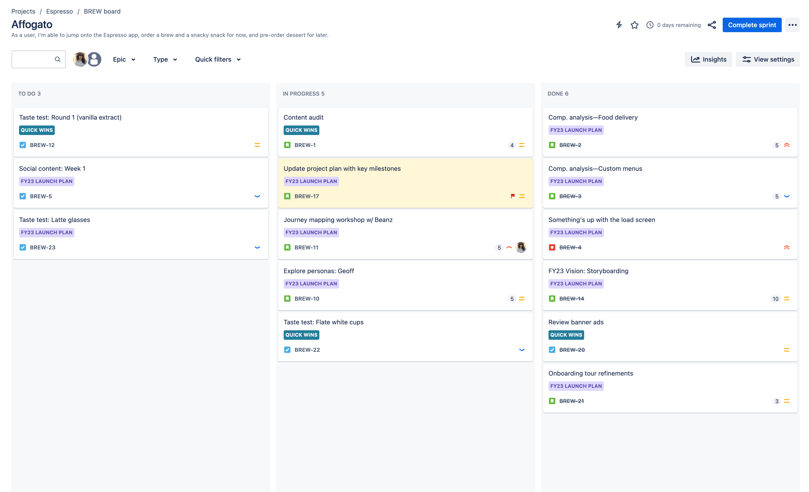
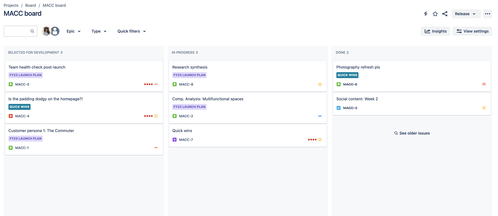
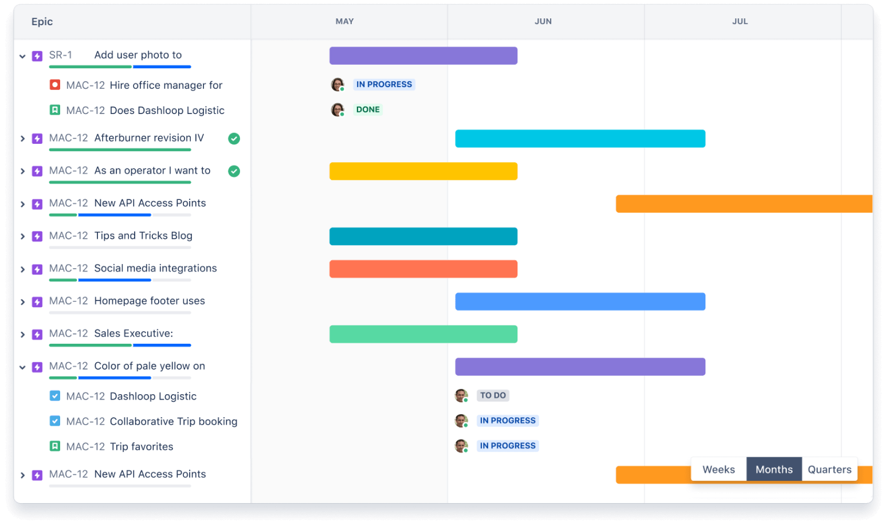
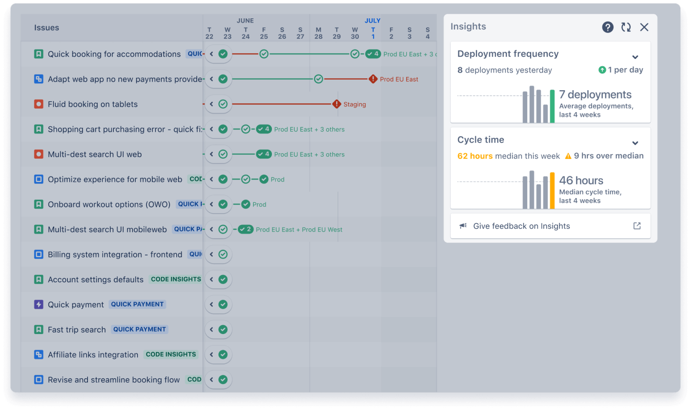

agile project management tool
Created by Angelina Bezik
What is Jira?
- Jira allows
- to create tasks
- to track tasks
- to manage tasks
History
Jira launched in 2002
Examples of companies that use Jira:

How can Jira help?
- Requirements management
- Product management
- Project management
The main elements of Jira
Boards
- Scrum board
- Kanban board
Scrum board
Kanban board
Timeline
Insights
My experience with Jira
- task allocation and monitoring
- recording the time spent
- communication with other team members at different levels and with other departments
Alternatives to Jira
Trello

Basecamp

Asana